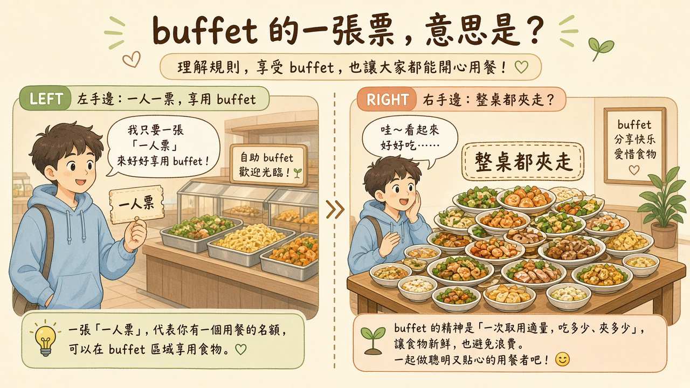
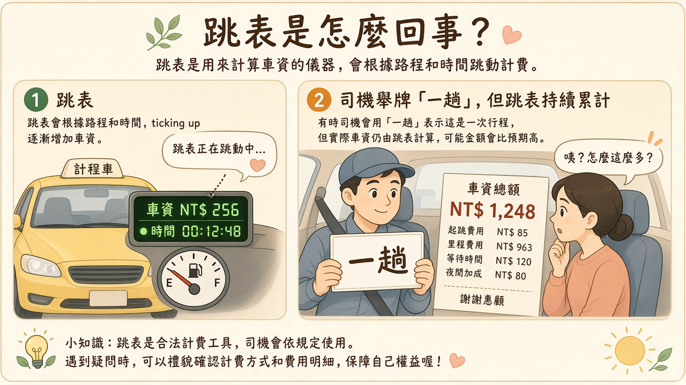
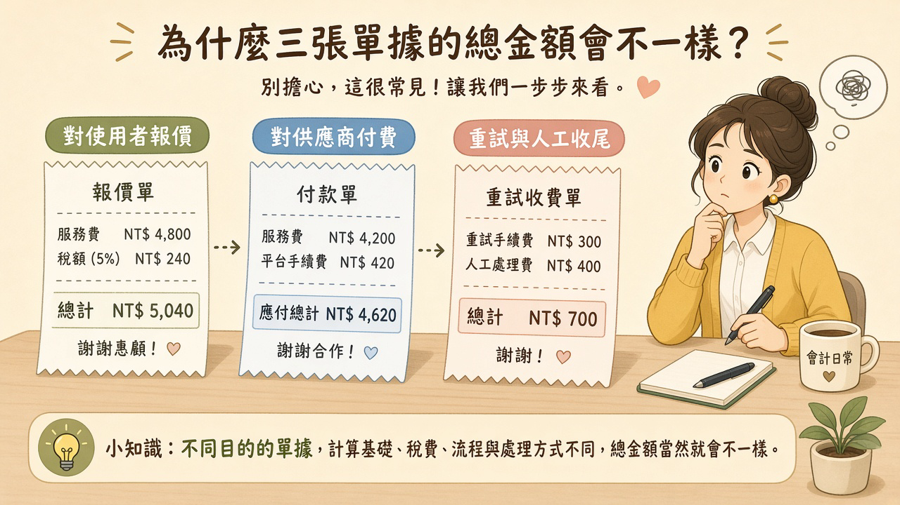

使用者以為自己在買一次回答。公司實際在賣的，是一段長度不固定、中間還可能重試的算力。功能上線時很好講；月底帳單比預期多一截時，問題常常不在模型夠不夠強，而在「一次」這個字，兩邊根本不是同一把尺。
閱讀說明：本文為編輯依常見產品定價與成本實務整理的科普短文，非整理自單一節目或供應商白皮書；文中不引用未查核的市場數字或產品保證。
功能上線的時候，團隊通常忙著看示範順不順、按鈕好不好按。定價也好講：一次多少，或這個月先送一段次數。熱鬧退下去，月底帳單比預期多一截。第一個被叫來的解釋，常常是模型不夠強，或使用者太會問。比較常先失準的，是計價單位。
使用者心裡的商品是一次回答。他按送出，等一個能用的結果，並覺得這次的價錢應該跟別人的一次差不多。公司賣出去的，卻是一段長度不固定的算力：上下文可長可短，失敗可以重試，工具可以連著叫，代理人還可以自己再跑一圈。這些都不一定會再請使用者按第二次。
自助餐收一人一票，聽起來很公平。票根一樣多，廚房卻發現有人只夾了一盤沙拉，有人把整桌熱食、甜點和湯都端回座位，還回去補了第二輪。票是按人收的，菜是按桌消失的。

插圖：白話科技編輯繪製／AI 輔助，非新聞照片
所以票根對得上人數，對不上廚房少掉的菜。按次收費若只數按鈕，也會遇到同一種月底：次數看起來正常，成本卻比次數長。
把「一次」拆開看，顧客、供應商和模型用的常常不是同一單位。對顧客，一次是一個完成的意圖：問完、查完，或產出一份能用的東西。對供應商，帳單上的一行可能是請求、token、工具呼叫或算力時間，而且一次按鈕可以對上好幾行。對模型那一側，長度來自它這次讀進去多少、生成多少，以及中間被叫起來幾次。
四種加長，都可能發生在使用者以為只有一次的那段時間裡。重試是第一次格式不對、逾時或被判斷為失敗，程式自動再問。工具呼叫是為了完成一件事，去查資料、做計算、再把結果寫回來，每一步都可能再打一次模型。長上下文是同樣的問題，有人只帶一句話，有人把整段對話或整份文件塞進來，按鈕次數一樣，讀進去的長度不一樣。代理人迴圈是目標還沒完成，它就繼續規劃、執行、檢查；圈數跟著任務走，不跟著按鈕走。
這四件事可以疊在一起。一次重試裡又呼叫工具，工具回傳的內容再被塞進下一輪上下文。使用者看到的仍是一個等待中的按鈕。帳上增加的是長度。
按次看起來公平，說的是分帳方式好懂，不是成本真的跟按鈕一樣齊。顧客的一次、供應商的一次、模型跑過的一次，若沒有被寫成同一件事，帳單就會在沒有人覺得自己多點了一份的時候變長。
單位先錯了，後面的帳就會各算各的。對外說的是一次，對供應商付的是另一種長度，中間若沒有人把這次任務實際跑了多遠記下來，月底會覺得是模型或帳單壞了。很多時候兩邊都沒壞，是報價單位和付費單位從一開始就不是同一個。
計程車跳表，卻用「一趟」跟乘客報價。市區繞兩條街和跨城趕路，都可以叫一趟。乘客記得的是趟；錶上記的是里程、等候，有時還包括繞錯路又繞回來的那段。乘客沒有要求繞路，錶還是在走。

插圖：白話科技編輯繪製／AI 輔助，非新聞照片
公司裡通常同時存在三本帳。第一本面對使用者：按次、按席位，或每月一段免費額度。使用者用這本帳決定要不要按，也用這本帳記憶「我沒有多用」。它好講，是因為單位粗、好記。
第二本面對供應商。供應商不一定認識你的「一次功能」。它認得的是請求、用量、工具、算力時間，或這些單位的組合。產品裡按了一次，在這本帳上可以是一整段明細。若沒有人把明細歸回哪一次成功任務，第二本只會說這個月變長了，不會說長在哪一種任務。
第三本留在內部。自動重試、失敗後再跑、人工檢查才算做完、客服把沒完成的任務補上，這些都不一定出現在使用者的收據，也不一定被歸到同一個功能。沒有歸屬時，它沉在公司總帳裡，下次檢討容易變成一句「AI 變貴了」，卻指不出是哪條路徑變長。
三種錯位很常見，而且都不是模型突然變弱造成的。
按次，但一次裡面含多輪工具。報價數的是按鈕或任務次數，成本數的是工具鏈。次數可以很穩，明細可以很長。使用者沒有多按，供應商那一側已經多了好幾行。
免費額度拿來當行銷，卻沒有尖峰閘門。額度的用意是讓人試用。短時間內的大量試用若沒有上限，算力會先被拉高。額度數字看起來還有剩餘時，供應商那本帳可能已經先厚了一截。閘門不是為了趕走試用，是為了讓試用的長度和這段推廣要承擔的成本，用同一種語言說話。
席位制很好算，重度使用者卻會把全體拖長。一個人一個位子，價錢也好比較。位子裡若有人持續跑很長的代理人任務，成本會由全體席位一起承擔。輕度使用者付的價錢裡，混進別人的長度。單價看起來整齊，交付成本並不整齊。
三本帳要對上，先把三句話寫出來：對使用者報價的單位是什麼，對供應商付費的單位是什麼，重試和人工收尾目前算在哪個功能、哪個人。寫不出來的那一句，就是帳單會嚇一跳的位置。

插圖：白話科技編輯繪製／AI 輔助，非新聞照片
少算錯，從測量開始，不從標價開始。先看「成功完成一項任務」在你們自己的紀錄裡，成本大概落在什麼長度，再決定對外用什麼單位報價。這裡說的中位，是把你們量到的成功任務按成本排起來，看中間那一次有多長。它是你們自己的紀錄，不是市場行情，也不是別人的帳單。還沒量之前，標價再好講，也只是在猜單位。
成功要先定義，否則中間那一次沒有資格被叫做成本。成功不是送出鍵被按過，是這項任務完成：該查到的查到了，不該答應的沒有答應，該交給人的真的交出去。失敗後的重跑、工具空轉、最後由人收尾，都算進這一次任務的成本組成。它們沒有讓使用者多按一次，卻讓這次任務變長。
量的時候可以先不寫真實金額。同一段時間裡，用相對單位記下：幾次模型呼叫、幾次工具、上下文大概是短還是長、有沒有重試、有沒有人接手。能分開，就已經比只有一個「次」更接近帳。
廚房若先印菜單價格，再猜每道菜用了多少料，月底就會和進貨單吵架。先稱一稱真正賣出去的那一盤用了什麼，再決定這一盤怎麼標價。
單位寫清之後，還要寫歸屬、上限和對帳。歸屬是這次用量算在哪個功能、哪一條路徑。上限是這條路徑允許燒到哪裡，超過時誰收到異常告警。對帳是把產品計到的「次」，和供應商帳單上的請求或用量，放在同一段時間裡比。
對不上的差額，要能說出更像重試、工具、長上下文，還是代理人多跑的圈。說不出來，就還缺紀錄，不是缺一個新的價錢。產品計次若只在按鈕被按下時計一筆，供應商帳單卻把背後的呼叫拆開，兩本帳會穩定地對不起來。這不是偶發的算錯，是兩本帳從一開始就在數不同的東西。
告警要指向一條路徑和一種異常，例如重試次數超過這條路徑事先寫下的上限、工具呼叫停不下來、或同一項任務的上下文突然變得很長。只有「這個月變貴了」的告警，團隊仍不知道該去看哪一次任務。
上限、降級和人工接手要寫進路徑，而不是寫進月底的檢討。超過上限時，可以改走較短的流程、停掉自動重試，或改由人接手。規則要在任務還在跑的時候用得上。否則告警只是通知大家帳單已經長出去了。
降級要事先講好會少掉什麼。少掉自動重試、少掉某一輪工具，或改回較短的上下文，都是一種降級。沒有寫明的降級，線上會在壓力出現時臨時決定，事後很難對回「這次為什麼變短，以及變短之後任務有沒有完成」。
成本還要連到成功結果。同樣燒了一段算力，完成任務和空轉失敗不該在報告裡收成同一個用量。用量回答「燒了多少」，成功結果回答「這次燒完有沒有交付」。兩欄分開，定價才有機會對上一次成功，而不是對上一次按鈕。
人工接手也是成本的一部分。人把沒做完的任務補完，這次交付才算數；補完所花的時間若沒有歸到同一個任務，第三本帳會繼續消失，前兩本帳卻看起來已經對過了。
以下是編輯根據本文延伸的實務建議，不是講者原話，也不是已驗證的研究結論。
把重試、工具呼叫與 token 用量計進成本觀測與歸因。一次按鈕背後的每一次模型呼叫、工具呼叫、重試和上下文長度，都要能歸到同一個任務。只有按鈕次數的觀測，看不出帳單為什麼變長。
讓產品的「一次」事件和供應商帳單對得起來。同一段時間裡，產品計到的次，要能對上供應商帳單上的請求或用量。對不上的差額，要能指出更像重試、工具、長上下文，還是代理人多跑的圈。
把上限、降級和人工接手寫進路徑。超過上限時，路徑要知道是縮短流程、停掉自動重試，還是改由人接手。規則要在任務還在跑的時候執行，並把結果記在這次任務上。
挑一項付費功能，記錄 20 次「使用者以為的一次」背後的實際呼叫次數，以及大致的成本結構。20 次是這週試驗的規模，不是測量出來的必要樣本數。沒有真實金額時，用相對單位即可，例如呼叫次數、有沒有重試、有沒有工具、有沒有人接手。驗收方式：你能畫出一次成功任務的成本組成，並向同事指出按鈕次數和實際呼叫差在哪裡。這是初步試驗，不能推廣成所有功能的結論。
以下是編輯根據本文延伸的實務建議，不是講者原話，也不是已驗證的研究結論。
定價前先定義「一次成功任務」和計價單位。先和負責這條路徑的人寫下：怎樣才算成功，對外報價數的是按鈕、任務、席位還是額度。單位沒寫清之前，先不要用「按次很公平」當作定價已經完成。
約定帳單異常誰接手，以及上限多久檢討一次。異常出現時要有具名的人收，上限也要有下一次檢討的時間。沒有人接手的告警，只會在月底變成一筆對不齊的帳。
比較的是整體交付成本，不是單次標價好不好看。標價好講，不表示重試、工具、長任務和人工收尾已經被算進去。看一項功能時，把完成任務的成本組成放在標價旁邊一起看。
找產品與工程各一人，一起寫下三件事：目前對外報價的單位、對供應商付費的單位，以及團隊目前認為成本最高的三個失敗情境。沒有發票金額時，用相對單位排序即可，不要補上未經查核的數字。驗收方式：對使用者的帳、對供應商的帳、內部重試與人工收尾這三本帳，各有一位具名負責人；寫不出負責人的那一本，標成「目前沒有人負責」。
按鈕可以只按一次。算力的長度、重試和收尾要能在帳上被看見，價錢才有機會和任務對上。
本文為編輯依常見產品定價與成本實務整理的科普短文，非整理自單一節目或供應商白皮書，也不冒充研究結論。文中不引用未查核的市場數字或產品保證。延伸閱讀連回本站姊妹篇，供對照成本監控、成本結構與模型記憶的歸屬。